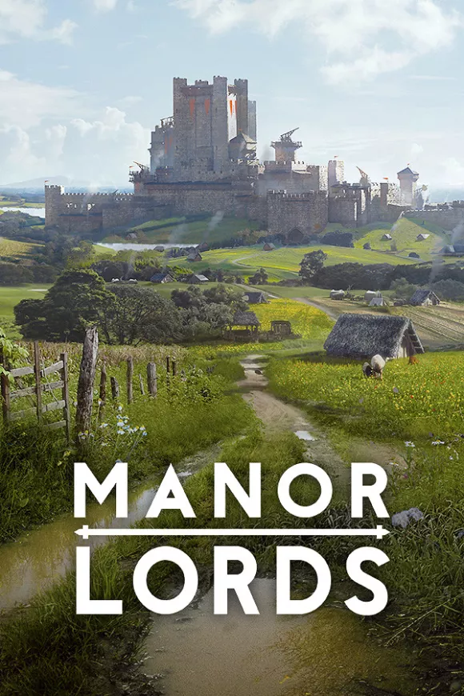

Manor Lords 11.6 GB
Género: Estrategia, Simulación
Manor Lords es un juego de estrategia medieval con un sistema
socioeconómico complejo donde encarnas a un señor feudal y gobiernas tus
tierras, construyes ciudades y libras batallas tácticas a gran escala. Las
estaciones, el clima, las ciudades... nada es inmutable.